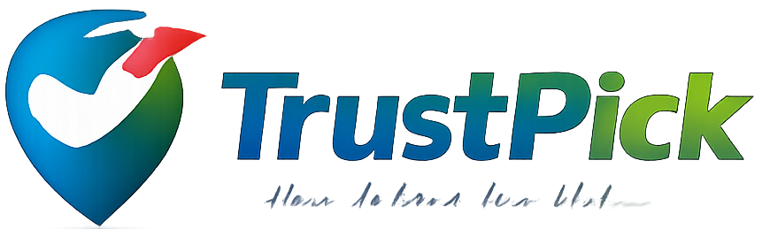

TrustPick
Vous êtes hors ligne
Il semble que vous n'ayez pas de connexion internet. Vérifiez votre connexion et réessayez.
Retour
Conseils
- Vérifiez votre connexion Wi-Fi ou données mobiles
- Activez le mode avion puis désactivez-le
- Essayez de vous rapprocher de votre routeur
Hors ligne